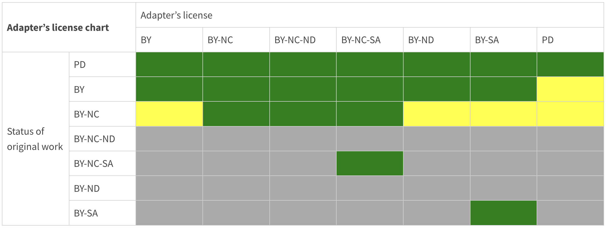

Hierarchical structure
A hierarchical organisation of the learning structure helps create granular learning resources that can be easily reused, but also enables easier implementation of the CC remix licensing rules and the definition of adapter license.
Learning Objectives
- Define a hierarchical learning content structure
- Determine CC licenses compatibility
- Identify adapter's license
- Use attribution
Target Audience
- attendees of the FAIR-by-Design ToT live webinar
Duration
40 mins
Prerequisites
- Completed Stage 1: Prepare
- Completed Stage 2: Discover
- Completed 04-Conceptualisation
Learning Tools
- Training BBB room
- Browser
- Menti access or BBB quiz interaction
Learning structure
Once the higher level outline is defined in the syllabus it is time to flesh out the rest while applying the same approach and concepts only on lower aggregation levels. You want to end up with a hierarchical structure that will define the lowest level elements (learning objects) of your learning materials as depicted in the image below.

Typically syllabus is defined on the level of a course (whole training). Depending on the size of the training it outlines the sections and/or modules in the syllabus instructional sequence.
It is recommended to go down to the level of a unit, where a unit will have no more than 4 learning objectives. As discussed previously, best reuse is achieved if you manage to break down the unit into a set of learning objects each designed around a specific learning objective. However take into account that this process is extremely time consuming. Therefore, the recommendation is to start on a larger scale first and then use your experience to move to a finer grain level.
Note that you don't need to strictly follow the represented breakdown, for an example you can skip the sections and work with modules and units only.
Flexibility is key! Learning materials broken down into flexible self-contained learning units can be reused more easily by fitting them and adapting them in other learning structures.
Activity
Try to develop your own hierarchical structure for the Open Science for Policy Makers course. Use the information you gathered in the Discovery step as inspiration keeping in mind its potential for reuse.
Mark the learning objects or learning units that you can reuse from what you have already discovered.
Licensing and Attribution
Combining and Remixing CCs
When reusing learning materials there is sometimes need to combine learning materials from different sources available under different licenses, i.e. combining.
You may combine any CC-licensed content so long as you provide attribution and comply with the NonCommercial restriction if it applies.
If you want to combine material in a way that results in the creation of an adaptation (i.e. a “remix”), then you must pay attention to the particular license that applies to the content you want to combine.
| adaptation | A modification rises to the level of an adaptation under copyright law when the modified work is based on the prior work but manifests sufficient new creativity to be copyrightable. |
|---|---|
The licensing section in the Preparing FAIR Learning Objects learning unit is an example of such an adaptation of two materials that have been combined together and further adapted by editing the text.
It is essential to understand that when reusing existing learning materials, one must ensure that the licenses of the included and adapted materials are compatible with each other. For these purposes, the CC license compatibility chart can be used.
 CC License Compatibility Chart by CC FAQ website licensed under the CC BY 4.0 license
CC License Compatibility Chart by CC FAQ website licensed under the CC BY 4.0 license
{kind=link}
Another moral right is the right of integrity which provides the author with the right to object to any modifications of the work that can be considered as prejudicial to the authors’ honour or reputation. Thus, even when reuse and modifications are permitted, they should be done in such a way that does not include a derogatory treatment of the work.
Adapter's License
If you make adaptations of material under a CC license (i.e. “remix”), the original CC license always applies to the material you are adapting even once adapted. The license you may choose for your own contribution (called your “adapter’s license”) depends on which license applies to the original material.
The chart below details the CC license(s) you may use as your adapter’s license. When creating an adaptation of material provided under a license identified in the left column, you may license your contributions to the adaptation under one of the licenses indicated on the top row if the corresponding box is green. CC does not recommend using a license if the corresponding box is yellow, although doing so is technically permitted by the terms of the license. If you do, you should take additional care to mark the adaptation as involving multiple copyrights under different terms so that downstream users are aware of their obligations to comply with the licenses from all rights holders. Dark gray boxes indicate those licenses that you may not use as your adapter’s license.
 CC license(s) you may use as your adapter’s license in CC FAQ website licensed under the CC BY 4.0 license
Licensing exercise
You are preparing a new course on Open Science and have decided to combine some already available content (images or even whole learning units) and also create your own learning content (additional learning units).
The content that you would like to reuse is:
- Your adaptation of Lesson 1 - What is Open Data from OpenSciency
- M1 - Open Science Ambassador Training from EURODOC
- slide 3 from Why open science? presentation by Sarah Jones
- slide 10 from Why open science? presentation by Sarah Jones
- slide 5 from Why open science? presentation by Sarah Jones combined with the badges image and text from Center for Open Science into a new adaptation
- The first thing you need to check is if reuse is allowed, i.e. check the licenses under which the content is released.
- If this is so, then you need to determine if it is allowed to combine together these contents.
- For the content that will be adapted, you need to check how the remix may be used.
- Finally, you need to decide on the license of your work.
Attribution
Do not forget that all reused material (with or without adaptation) needs to be attributed to the original author according to the TASL rules (or in another format if specified by the author).
It is recommended that if a complete learning unit is reused to provide the attribution at the beginning of the unit. Same applies for reused parts of a learning unit (text only, or combination of text and images). The attribution of reused images and tables goes right under the content.
As you continue to create your own learning content you will identify additional resources that you would like to reuse. As long as the resources have illustrative purpose only you don't need to double check the adapter license. But, you will need to provide attribution for all of them. Attribution should be provided in all places where the resource is reused (content, slides, activity description, etc.)
Therefore, it you still have doubts about how to attribute a resource, revisit the attribution activity in the Preparing FAIR Learning Objects learning unit.
Summary
Once the syllabus is completed, a fine grained hierarchical structure can be defined clearly depicting the reused learning resources and the new learning content that needs to be created.
Before starting with adaptation and design of the new learning content you need to ensure that you have followed the rules of CC licenses remixing and have defined a compatible adapters license.
Finally, always keep in mind that you MUST attribute all of the reused resources (both adaptations and illustrations only).